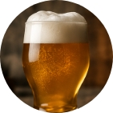

India Pale Ale (IPA)
Amargor alto – Lúpulo intenso – Color dorado
Originaria de Inglaterra, la IPA se caracteriza por su marcado amargor y sus aromas cítricos, frutales y resinosos, aportados por los lúpulos.
Amargor:
Cuerpo: